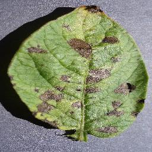
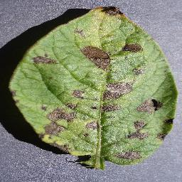

Doença:
Early Blight
Espécie de planta:
Batata
Sobre a doença:
Infeção fúngica caracterizada por pequenas manchas castanhas com anéis concêntricos que formam um padrão de “olho de boi”.
Early Blight
Batata
Infeção fúngica caracterizada por pequenas manchas castanhas com anéis concêntricos que formam um padrão de “olho de boi”.